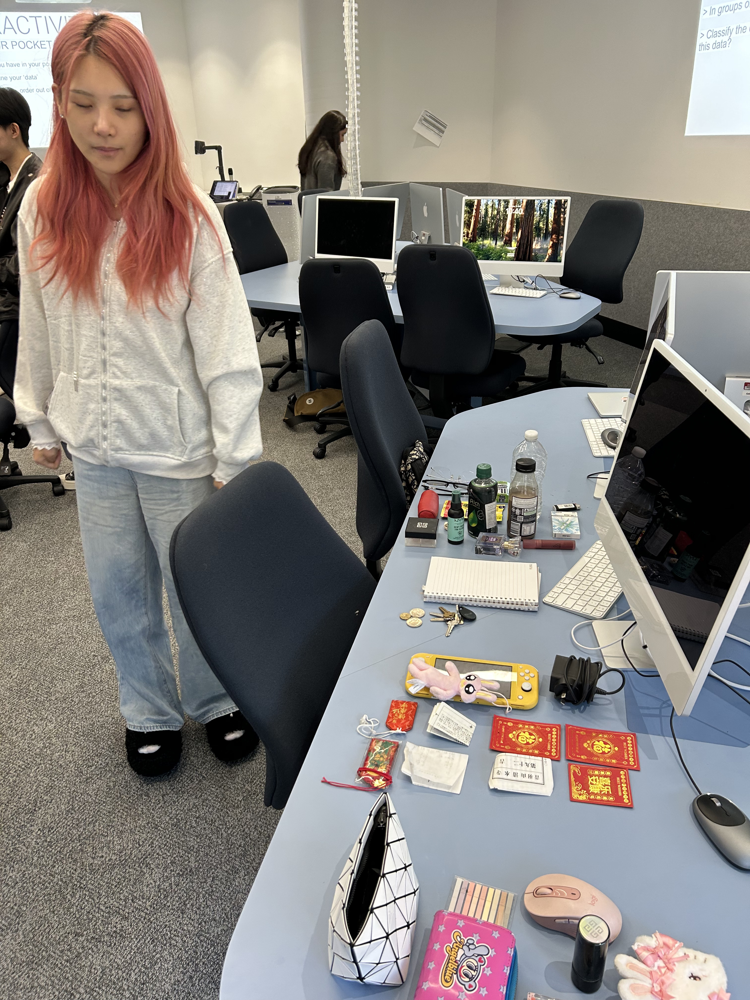

DATA DATA DATA
Data is a collection of values that represent certain concepts and information. They help determine and describe facts and statistics when analysed.
Take this beaver for example, we can see the data taken from the amplitude of his voice visualised by the graph. Press the button on the top left to hear it:
(This might take a couple seconds to load)
There is much ado about data... including
DATA DRIVEN ART
When visualised, data as a medium can tell personal, social, or global narratives in an array of digital (or even physically manifested) possibilities.
Here are some examples, some of which taken from class:

Our belongings considered as data that represented things that would help us survive on a deserted island, ordered from highest priority to lowest
drag your mouse over to the black prompts
click and try typing something or dragging the mouse around (sound on)

NEXT